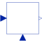

ToDQTransform instantaneous stator inputs to rotor fixed space phasor |

|
Diagram
{kind=link}
Information
This information is part of the Modelica Standard Library maintained by the Modelica Association.
The multi phase input values u[m] are transformed to the corresponding space phasor which is rotated to the rotor fixed reference system,
using the provided mechanical rotor angle phi. The output are the resulting d and q components of the space phasor arranged in one vector y[2].
See also
Parameters (3)
| nin |
Value: m Type: Integer Description: Number of inputs |
|---|---|
| nout |
Value: 2 Type: Integer Description: Number of outputs |
| p |
Value: Type: Integer Description: Number of pole pairs |
Connectors (3)
| u |
Type: RealInput[nin] Description: Connector of Real input signals |
|
|---|---|---|
| y |
Type: RealOutput[nout] Description: Connector of Real output signals |
|
| phi |
Type: RealInput |
Components (3)
| toGamma |
Type: Gain |
|
|---|---|---|
| rotator |
Type: Rotator |
|
| toSpacePhasor |
Type: ToSpacePhasor |
Used in Components (1)
|
Modelica.Electrical.Machines.Utilities Voltage controller |